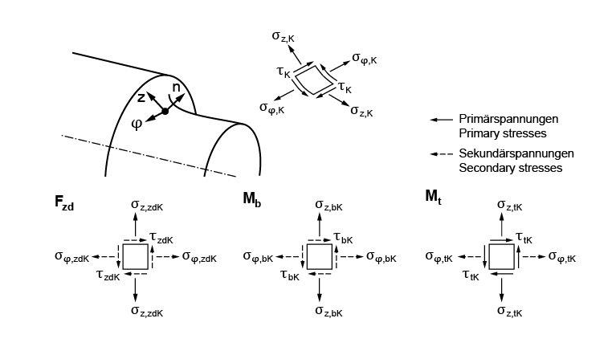
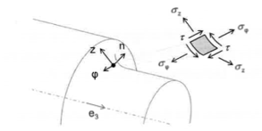
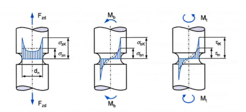
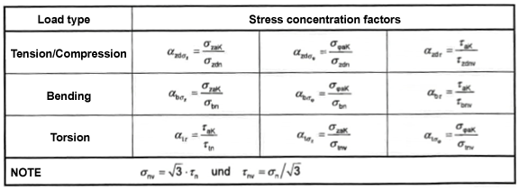
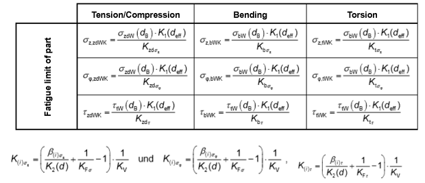
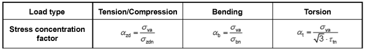

|
|
|


根据 DIN 743 计算多重缺口
在 FE 程序中创建模型（建模指南）以及根据应力定义缺口系数的步骤（评估指南）在 FVA 研究项目 No. 700 I《Berechnung von Mehrfachkerben nach DIN 743 durch Einbindung von FEM-Ergebnissen》中作了说明。
此处定义的方法仅适用于零件表面不受力的缺口。对于接触区内随时间产生微动疲劳的临界失效点（例如过盈配合或键连接），仍须使用通过试验确定的缺口效应系数进行计算。

图 26.3：一般情况下的局部缺口应力
这里描述了两种不同的方法：方法 A（用于多重缺口的综合计算方法）和方法 B（涉及多重缺口的简化方法）。
KISSsoft 不使用方法 B。
方法 A：
方法 A 考虑了影响多重缺口强度的所有效应。
临界校核点的应力定义在零件表面上等效应力幅最大的位置。然后对这些值应用冯·米塞斯应力 (VM) 来计算等效应力幅。

图 26.4：局部缺口应力的分量
FE 分析通常在全局坐标系中提供空间应力张量，该张量仍需转换为平面应力张量。
缺口系数定义为缺口根部局部应力峰值与缺口截面处名义应力的商。

图 26.5：弯曲、拉伸/压缩、扭转和剪切应力
为定义缺口系数，将局部应力分量分为主应力和次应力。某载荷类型的主应力是与基本载荷工况相关的名义应力。
必须先定义应力梯度，才能确定理论应力集中系数。这需要零件内部相邻节点处出现的应力值。
缺口系数使用下一张表中的公式（方法 A）确定。缺口系数也可能取小于 1 的值。在方法 B 中忽略次应力。

图 26.6：表 4 - 计算零件的缺口系数（方法 A）
缺口效应系数 β 是针对局部应力幅中存在的每个分量分别计算的。为此所需的应力梯度不单独定义。
特殊情况：过盈配合（无基本载荷工况的平均应力）：
如果无基本载荷工况的平均应力作为名义应力纳入计算，则可按与平均应力相同的方式处理。首先根据所得的局部应力计算等效应力。然后可用相关缺口系数确定名义平均应力。
然后逐分量进行安全系数校核，因为缺口系数也是针对每个分量分别计算的。
各分量的安全系数按如下方式计算：

图 26.7：表 5 - 计算零件的疲劳极限
此处还计算平均应力敏感度。请调整 DIN 743 中各范围的平均应力敏感度，以确保该附加计算不会返回意外结果。安全系数使用平面应力状态下组合载荷和相位等效的公式确定。
方法 B：
在方法 B 中，确定缺口系数时对机械应力进行了简化。此方法不适用于叠加的动态载荷。
等效应力 (VM) 由主应力和次应力计算得出。
此方法用于组合载荷时受到一定限制。限制条件：
σa2/σa1 < 0.2 and τa2/σa1 < 0.2
缺口系数使用 FE 预备分析中各载荷工况（拉伸/压缩、弯曲或扭转幅值）的缺口应力来确定。

图 26.8：表 7 - 使用等效应力计算缺口系数（方法 B）
支承效应和缺口效应系数按 DIN 743 中公式规定的相同方式定义。
不承受基本载荷的平均应力（过盈配合）不纳入简化的方法 B。
安全系数校核按与 DIN 743 相同的方式进行。
Calculation of multiple notches according to DIN 743
The procedure for creating the model in a FE program (modeling guideline) and for defining a notch factor from the stresses (evaluation guideline) is described in FVA research project No. 700 I ‘Berechnung von Mehrfachkerben nach DIN 743 durch Einbindung von FEM-Ergebnissen’.
The methods defined here are limited to notches with component surfaces that are not subject to force. You will still have to use a notch effect coefficient determined by experimentation to calculate critical failure points with fretting fatigue over time in the contact zone (e.g. interference fits or key connections).
Figure 26.3: Local notch stresses in a general case
There are two different methods described: Method A (a comprehensive calculation method for multiple notches) and Method B (a simplified method involving multiple notches).
KISSsoft does not use Method B.
Method A:
Method A takes into account all the effects that affect strength for multiple notches.
The stresses at the critical proof point are defined at the point where the equivalent stress amplitude is greatest on the component surface. The von Mises stress (VM) is then applied to these values to calculate the equivalent stress amplitude.
Figure 26.4: Components of local notch stress
The FE analysis usually supplies a spatial stress tensor in the global coordinate system, which still has to be transformed into the plane stress tensor.
The notch factor is defined as a quotient of the local stress peaks at the notch root and of the nominal stress in the notch cross section.
Figure 26.5: Bending, tension/compression, torsion and shearing stresses
To define the notch factor, the local stress components are separated into primary and secondary stresses. A load type's primary stress is the nominal stress associated with the base load case.
You must define the stress gradient before you can determine the theoretical stress concentration factors. This requires the stress values that occur at a neighboring node in the interior of the component.
The notch factor is determined using the equations in the next table (Method A). The notch factor can also have values that are less than 1. The secondary stresses are ignored in Method B.
Figure 26.6: Table 4 - Calculating the notch factor for components (Method A)
The notch effect coefficient β is calculated separately for each component present in the local stress amplitude. The stress gradient required to do this is not defined separately.
Special case: interference fit (mean stress without base load case):
If mean stress without a base load case is included in the calculation as nominal stress, it can be handled in the same way as mean stress. Firstly, the equivalent stress is calculated from the resulting local stresses. Then, the relevant notch factor can be used to determine the nominal mean stress.
The safety verification is then performed component by component, because the notch factor was also evaluated individually for each component.
The component safeties are calculated as follows:
Figure 26.7: Table 5 - Calculating the part's fatigue limit
The mean stress sensitivity is also calculated here. Adjust the mean stress sensitivity of the ranges in DIN 743 to ensure this additional calculation does not return unexpected results. The safety is determined using the formulae for combined load and phase equivalence in the plane stress state.
Method B:
In Method B, the mechanical stress is simplified when determining the notch factor. This method is not suitable for a superimposed dynamic load.
The equivalent stress (VM) is calculated from the primary and secondary stress.
This method can only be used to a limited amount for a combined load. Limits:
σa2/σa1 < 0.2 and τa2/σa1 < 0.2
The notch factor is using the notch stresses for the load cases (tension/compression, bending, or torsion amplitude) from a FE provision analysis.
Figure 26.8: Table: Table 7 - Calculating the notch factor with equivalent stress (Method B)
The supporting effect and notch effect coefficient are defined in the same way as specified in the formulae in DIN 743.
Mean stresses that are not subject to base load (interference fit) are not included in the simplified Method B.
The safety verification is performed in the same way as in DIN 743.